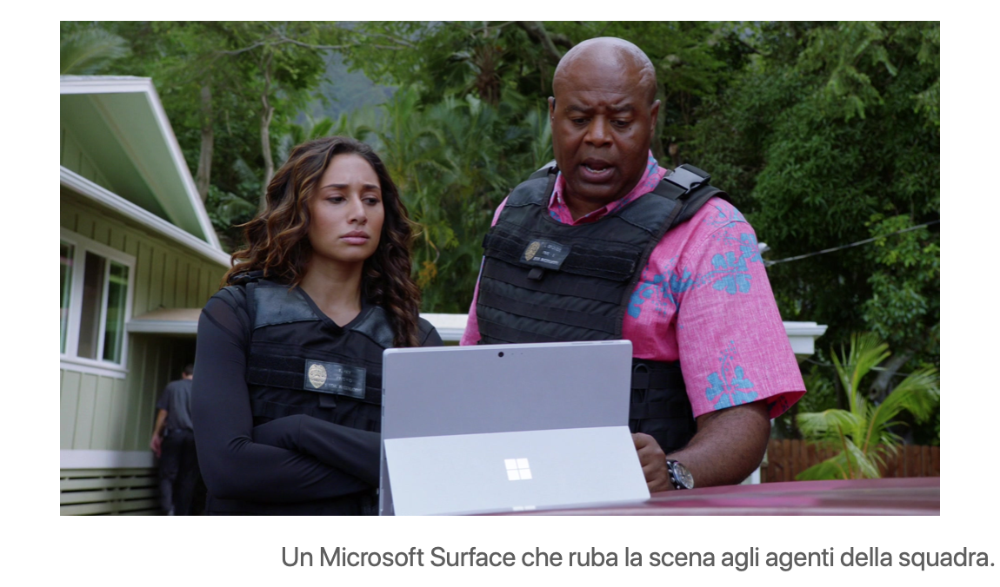

Di recente mi sono riguardato le prime 6 stagioni di Hawaii Five-O e chi mi conosce sa che non consiglierei mai una serie fatta di azione, machismo e belle ragazze che fanno surf in bikini.
MA se per un attimo chiudiamo un occhio sui classici clichè da poliziesco americano, devo fare i complimenti ai produttori e agli sceneggiatori per la trama orizzontale che si snoda tra i vari episodi, una delle migliori in cui mi sia mai imbattuto. Parentesi a parte, l’articolo di oggi parla di Product Placement, ovvero degli accordi commerciali tra chi produce contenuti e chi si occupa di campagne pubblicitarie, meccanismo che Hawaii Five-O conosce molto bene.
La serie stessa nasce negli anni ’60 per promuovere dal punto di vista turistico lo stato delle Hawaii, ultimo entrato negli Usa, agli occhi degli altri americani e al resto del mondo. Il che spiega le inquadrature generose alle spiagge dorate, hotel da sogno e le sopracitate ragazze e ragazzi che surfano mostrando un fisico impeccabile.
La rivisitazione moderna, che mantiene il nome ma aggiorna personaggi e ambientazione ai giorni nostri, non perde tale vizio ed è palese come alcune scene enfatizzino sull’ospitalità rispetto ai turisti, sulla bellezza dei panorami e delle tradizioni locali, sull’abbondanza dei servizi e delle strutture ricettive presenti, anche quando tutto ciò ha poco a che fare con la trama investigativa.
Nei titoli di coda questo viene chiarito dalla presenza della Hawaiian Airlines e della catena di hotel di lusso Hilton tra gli sponsor della serie, ma la cosa curiosa è che appaiono anche altri due brand di tutt’altro genere: General Motors e Microsoft. Per quanto riguarda il primo è presto detto, tutti i protagonisti guidano automobili del marchio (anche quando con uno stipendio da poliziotto non potrebbero permettersele) e il gioco è fatto.
Ma, ovviamente, il mio focus va sul secondo nome. Come ben saprete l’azienda di Redmond ne ha passate di tutti i colori negli ultimi due decenni: prima deteneva una solidissima posizione dominante nel mercato pc, poi (complici gli scivoloni di Windows Vista, Windows 8 e la diffusione fulminea di smartphone e tablet) tale controllo si è via via perso e negli ultimi anni le principali entrate si sono registrare grazie a soluzioni per le aziende e piattaforme cloud, più che per i prodotti destinati alla massa.
Il più grande fallimento è sicuramente stato quello di Windows Mobile e dei vari Lumia: nel 2012-2013 sembrava possibile la stabilizzazione di Microsoft all’interno di una sorta di triumvirato, a pari forze con iOS e Android, ma nonostante in alcuni mercati (tra cui quello italiano) le cose fossero andate bene, alla fine non ci hanno creduto manco loro e i loro telefoni e tablet sono spariti dalla circolazione.
Bene: in quegli anni andavano in onda le prime stagioni della serie Hawaiana e nel corso degli episodi la presenza di prodotti si è fatta via via più insistente. Inizialmente il protagonista possedeva un iPhone, cosa assolutamente comune negli Usa, mentre gli altri personaggi iniziavano ad affacciarsi ai primi Lumia e ai primi tablet, specialmente nell’ufficio della squadra, dominato da un tavolo touch-screen davvero scenico. In seguito anche la presenza dei servizi si è fatta sentire maggiormente: alcuni dei dialoghi dei protagonisti, tra un’indagine e l’altra, finivano per riguardare funzioni dei telefoni o, per fare un altro esempio, i vari membri comunicavano tra loro con delle dirette Skype, con tanto di logo della compagnia sui display.
Insomma, un continuo susseguirsi di piazzamenti di prodotti e software, ma soprattutto di tentativi di mostrarli in un ipotetico uso quotidiano, quasi a voler insegnare al pubblico l’uso di alcune funzionalità, con il classico personaggio che non capisce un accidente e gli altri che lo aiutano spiegandogli le cose in modo elementare. Questo è uno dei tanti sforzi di Microsoft, nel tentativo di convincere le persone a passare a Windows Mobile, quel sistema operativo per telefoni a tema scuro, dalle gigantesche icone quadrate e dalle impostazioni disposte in modo anti-intuitivo. E giustamente, visto che il prodotto si è dimostrato essere di scarsa qualità e di difficilissima comprensione per l’utente medio, alla fine a nulla sono valsi gli intenti “educativi” delle serie televisive americane intorno ad esso incentrate.
Se personalmente mi verrebbe da dire un sonoro “meglio così!”, da un lato devo anche ammettere che la formazione riguardo all’uso della tecnologia pensata per le masse oggigiorno è molto carente ed è un peccato vedere il fallimento di una delle poche realtà che, seppur in modo goffo, ci ha effettivamente provato.
